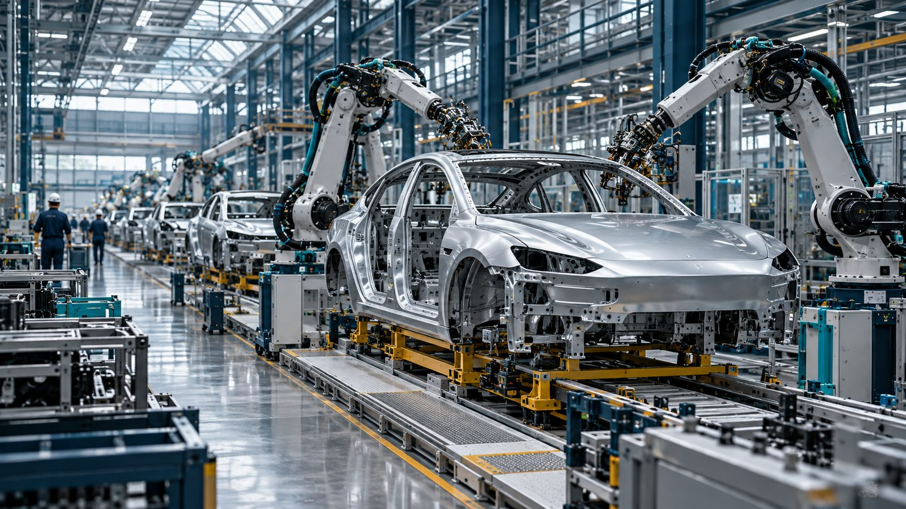
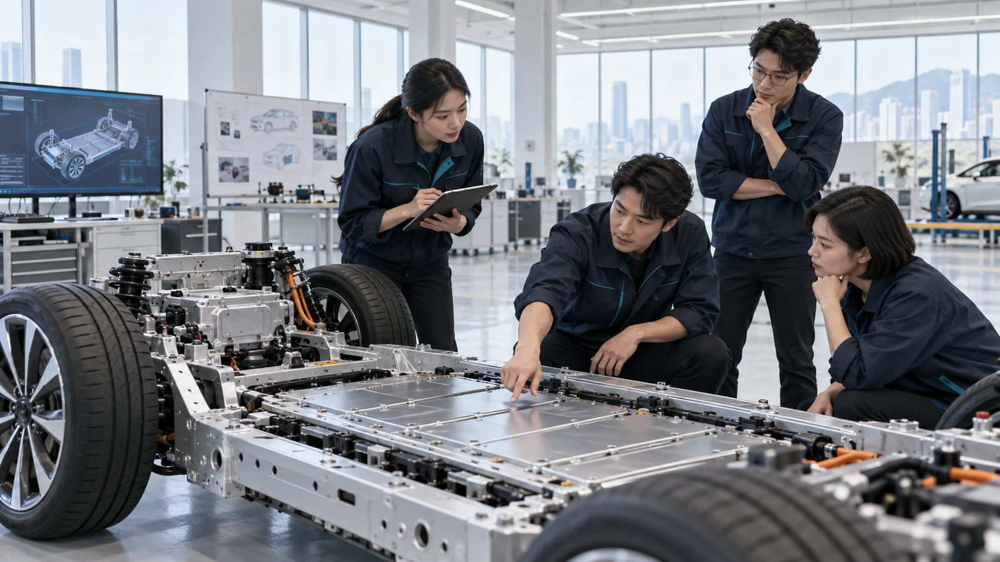

研发投入
+17.13%
541.61 → 634.41 亿元
创新管理 · 企业案例研究
从技术积累到经营价值
概念插图 / AI生成18 页 · 手动翻页 · 页内自动展开
研究起点 / 2025年同比
研发投入继续增长，归母净利润下降。转化过程比投入规模更值得追问。
研发投入
+17.13%
541.61 → 634.41 亿元
归母净利润
−18.97%
402.54 → 326.19 亿元
同一年 · 2025完整年度 · 来源：[1] 2025年年报

研究框架 / 按课程作业结构展开
从企业背景走向管理启示：公司、体系、政策、工具、启示五层展开。
业务布局
研发投入
战略与组织
创新过程
合作与激励
风险治理
系统创新
项目评价
能力积累
协同与改进
体系 / 创新战略
投入只是条件，组织承接才决定资源能否变成能力。
柱形自零起 · 百分比为研发强度
纵轴：0 — 700 亿元 · 2023年研发强度为计算值
研发是否投向真正影响用户价值的问题
设计、工艺、制造是否使用同一套证据
方案能否被重复、稳定地生产出来
同一笔投入，可能变成专利、产能，也可能变成库存。差别在于组织能否把资源转化为可复用的能力。
体系 / 创新组织
协同发生在接口上：接口标准、共同验证与问题关闭。
各团队围绕同一整车目标交换接口要求、验证结论与问题记录。协同能力，就体现在这些往返里。
体系 / 创新过程
开发速度、验证质量与量产稳定性必须一起接受检查。
五个环节不是一次性的串行审批，而是带反馈的循环：上市后的失效信息，会改写下一轮的需求与验证条件。
案例一 / 2020年发布的刀片电池
长条形电芯改变的不只是形状，还有连接方式、制造条件与验证边界。
案例二 / 2024年第五代DM技术
案例比较 / 从技术走向管理
两个案例技术重点不同，但都把问题指向接口管理。
| 分析维度 | 刀片电池 | 第五代DM | 共同的管理含义 |
|---|---|---|---|
| 创新焦点 | 电芯形态与电池包结构 | 动力与能量管理协同 | 系统级的重新配置 |
| 组织要求 | 研发、制造、整车共同调整 | 多专业围绕整车目标权衡 | 接口需要共同语言 |
| 验证边界 | 结构变化后重查制造与安全 | 覆盖不同工况与车型适配 | 复用要检查适用条件 |
让部件改进真正转化为整车价值：跨车型复用可以分摊投入，同时需要检查尺寸、工况和版本变化。
机制 / 开放合作
合作管理的三个边界 分析建议
机制 / 人才与激励
两类统计人群不同：持股计划覆盖员工整体，不能据此计算研发人员持股覆盖率。
评价重点

政策 / 经营约束
金额单位：亿元 · 2025年年报 · 切换右侧指标查看三年数据
风险 / 制造质量
设计正确不能替代制造过程控制。
从制造接触，到元件微裂纹，再到使用中的短路与过热风险；每个环节都需要留下可追溯的记录。
方法与工具 / 改进建议
工具从问题出发，而不是从清单出发。
技术方向与需求脱节
→需求与能力缺口
资源承诺早于验证
→推进、补试或停止
风险停留在笼统描述
→失效路径与控制证据
复用时丢失适用条件
→场景、版本及变更记录
四项工具可以组成相互连接的改进方案：路线图明确方向，评审安排资源，失效分析识别风险，追溯系统积累经验。以上为基于案例提出的建议，不代表企业已实施制度。
方法与工具 / 绩效评价建议
项目与平台的生命周期评价：投入、过程、结果、风险四个面。
资源是否投向关键问题
关键决策是否有充分证据
技术应用带来哪些改善
经验能否减少重复失效
研发资本化比例：2024年 1.78% → 2025年 8.61%。这会影响费用确认的时间分布，评价时结合项目阶段、预期收益及后续摊销。
经验与启示 / 实施建议
先跑通一个闭环，再谈规模推广。
梳理跨部门问题，建立数据与版本基线
牵头：项目管理与质量团队选择一条产品线，连接评审、变更与售后
牵头：研发、制造与售后固化适用条件与责任，扩展复用并检查复发
牵头：平台与业务负责人对于资源较少的企业，小范围跑通一个闭环，比一次建设庞大系统更可实施。
风险关闭证据完整，同类问题持续减少。
周期与改进目标应结合真实基线制定结论 / 可迁移的创新管理经验
从用户问题出发，让技术、组织和过程共同创造价值。
在最影响客户价值的领域形成优势，再通过合作补充其他能力。
让接口、验证与问题关闭在同一套证据上运行。
创新管理的成熟，也表现在发现偏差后能及时调整。
资料依据 / 小组分工
完整链接、理论文献与页码见书面报告。核查日期：2026年10月25日。
小组砺行班级______
| 姓名 | 学号 | 实际分工 |
|---|---|---|
| 孙德鑫组长 | 20244684 | 统筹与定稿；研究框架、经营数据核校；主讲 01—09 页 |
| 郭旭泽 | 20244725 | 三维场景与网站实现；PPT 图表与动画；主讲 10—13 页 |
| 阿布里米提·玉素甫 | 20241883 | 资料整理与案例写作；讲稿与答辩；主讲 14—18 页 |
年级与班级由小组补充；姓名、学号与实际分工已按组内安排填写。
完整汇报 · 18 页
三维场景用于课堂讲解，可在对应页直接操作；PPT 版本使用同一场景的关键视角与拆解帧。